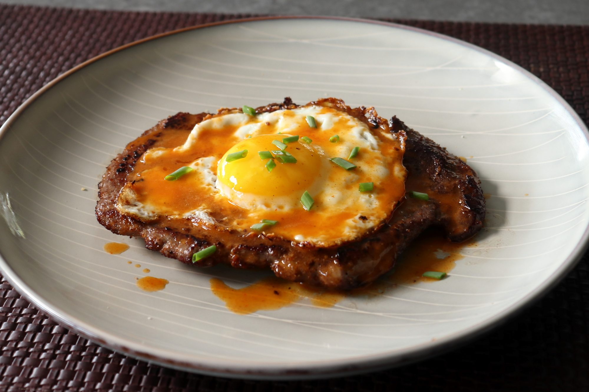

Home
Steak & Eggs Recipe

Description
I love the tangy tenderization that the buttermilk provides. After the buttermilk soak,
dredge the chicken pieces in seasoned flour, and fry them in hot oil until crisp and cooked.
Ingredients
- 1 (6 ounce) top sirloin steak
- salt and freshly ground black pepper to taste
- 4 teaspoons fine dry bread crumbs
Steps
- Place steak between two pieces of plastic wrap and pound to a ¼-inch thickness. Season one side generously with salt and pepper,
then sprinkle ½ of the bread crumbs over top. Place the plastic wrap back over the steak and pound a few times with the meat mallet.
Repeat to season the other side with salt, pepper, and remaining bread crumbs.
- Set a pan over high heat. Add 2 tablespoons melted clarified butter and wait until it starts to smoke.
Quickly and carefully add steak to the pan and cook for 1 minute. Flip steak and reduce heat to medium-high;
cook until you see a little bit of pink juice pool on top of the steak, about 1 more minute. Flip again, turn off the heat,
and transfer steak to a warm plate.
- Let the pan cool for 30 to 60 seconds, then add 1 teaspoon melted clarified butter. Turn heat to medium and add egg.
Break the egg white so it's all the same thickness and the yolk is in the center.
Add a pinch of salt and cook until egg white is cooked through with brown and crispy edges. Place the egg on top of the steak.